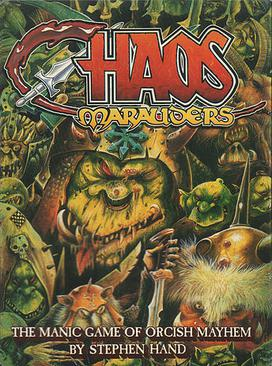

Chaos Marauders is a card-based board game for 2-4 players .The object of the game is to create "battle lines" of orcs and a motley assortment of creatures from the Warhammer universe, including skaven (with their formidable Horned Rat Standard, and "Clan Skyrre Blowback" flamethrower), goblins, dwarf captives, hobgoblins, "crummy snotling slaves", an Orc War Wyvern and the eponymous Chaos Marauders.